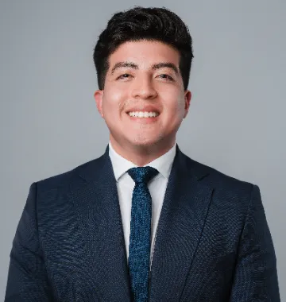

Cuentas minoristas de CFD
74–89%
pierden dinero. La mayoría opera el precio sin leer el contexto que lo mueve.
ESMA · 2018 Acceder a la Terminal
Acceder a la Terminal
Disponibilidad y condiciones sujetas a revisión individual. Invertir implica riesgo de pérdida.
No te vendemos señales. Te damos la Terminal, la metodología y la ruta para que operes capital real con tu propio criterio.
Usuarios de Global Macro Terminal
Portafolios en seguimiento
USD en capital bajo gestión
Países con presencia
Infraestructura y tecnología con la que operamos




Millones de participantes operan diariamente en los mercados financieros. Sin embargo, tener acceso a gráficos, noticias e indicadores no significa comprender qué está impulsando el movimiento de los activos.
La inflación, las tasas de interés, el empleo, la política monetaria, los flujos de capital y el posicionamiento de los participantes ayudan a construir el contexto.
pierden dinero. La mayoría opera el precio sin leer el contexto que lo mueve.
ESMA · 2018BIS · Encuesta Trienal 2010–2025
+28%
vs. 2022
Precio vs. contexto
Tasas, inflación, flujos y bancos centrales mueven el precio.
Convertimos información compleja
Comprende los ciclos económicos, los bancos centrales, el empleo, la inflación y las condiciones financieras.
Integra contexto macro, posicionamiento institucional, sentimiento, momentum y tendencias para construir escenarios de mercado.
Abrir la TerminalDesarrolla una tesis, identifica catalizadores, define invalidaciones y gestiona el riesgo antes de ejecutar.
No se trata de predecir cada movimiento. Se trata de construir un proceso de análisis que permita tomar decisiones fundamentadas.
El precio muestra lo que ocurre. La macroeconomía ayuda a entender por qué.
Comprende los ciclos económicos, los bancos centrales, el empleo, la inflación y las condiciones financieras.
Integra contexto macro, posicionamiento institucional, sentimiento, momentum y tendencias para construir escenarios de mercado.
Abrir la TerminalDesarrolla una tesis, identifica catalizadores, define invalidaciones y gestiona el riesgo antes de ejecutar.
No se trata de predecir cada movimiento. Se trata de construir un proceso de análisis que permita tomar decisiones fundamentadas.
Un ecosistema que te acompaña desde tus primeros análisis hasta el desarrollo de capacidades avanzadas de trading y gestión de portafolios.
Accede gratuitamente a una comunidad orientada al análisis macroeconómico, con contenidos introductorios, canales especializados y sesiones abiertas.
También puedes acceder a beneficios Premium mediante los requisitos establecidos con nuestro bróker aliado.
Regístrate gratis en el Club de Traders →Programa intensivo de cuatro semanas, que combina formación macroeconómica, metodología y práctica con Global Macro Terminal.
Incluye seis meses de acceso, formación complementaria, seguimiento de portafolio y sesiones grupales.
Conoce el Acelerador →Nuestra membresía anual avanzada reúne tecnología, formación, análisis colaborativo, reuniones de seguimiento y desarrollo de capacidades para la construcción y evaluación de portafolios.
Los participantes elegibles pueden postularse a un proceso de evaluación de su historial operativo, metodología y gestión de riesgo.
La eventual asignación de capital o incorporación a programas de gestión depende de una evaluación individual, acuerdos y requisitos aplicables. No existe asignación automática ni garantía de fondeo.
Las certificaciones las emiten las instituciones aliadas y no constituyen una licencia para gestionar capital de terceros. No es promesa de resultados.
Global Macro Terminal integra herramientas para transformar datos en escenarios de análisis y decisiones estructuradas.
Inflación, crecimiento, empleo, tasas de interés y política monetaria.
Datos COT y evolución de posiciones de los participantes reportados.
Lectura del posicionamiento y expectativas de participantes minoristas.
Herramientas para evaluar dirección, fuerza y comportamiento de activos.
Calificaciones que sintetizan distintos componentes de análisis para ayudar a identificar sesgos y escenarios.
Programas formativos, sesiones en vivo, metodología e ideas de trading para entender cómo utilizar los datos.
Vistas ilustrativas con datos demo; no muestran resultados reales.
Global Macro Terminal centraliza las herramientas de investigación y análisis.
Conoce másPermiten a los clientes elegibles abrir y operar sus propias cuentas bajo las condiciones de la entidad correspondiente.
Conoce másLos programas avanzados incorporan seguimiento, sesiones grupales y espacios para discutir escenarios y metodología.
Conoce másGlobal Macro y Cronoss integran programas educativos y certificaciones disponibles según el plan y las instituciones correspondientes.
Conoce másProgramas de evaluación para traders que buscan demostrar disciplina y capacidades de gestión.
Conoce másClub de Traders conecta a los participantes mediante contenido, sesiones y espacios de aprendizaje.
Conoce más| Plan | Precio | Equivale al mes |
|---|---|---|
| Club de Traders | Gratuito | $0 |
| Plan Mensual | $202 / mes | $202 |
| Acelerador | $1,210 / semestre | $202 |
| Trading Floor | $2,310 / año | $193 |
Los miembros del Club que cumplan los requisitos del programa con Equiti pueden acceder a beneficios Premium sin pagar una membresía adicional de GMT durante su periodo de elegibilidad.
Requisitos de referencia: cuenta validada, fondeo mínimo de USD 500 y actividad de 5 lotes mensuales, conforme a las condiciones vigentes del programa.
El capital permanece en la cuenta del cliente con el bróker. La operación puede implicar spreads, comisiones y riesgo de pérdida; no debe realizarse volumen únicamente para mantener beneficios.
Comparar planes y beneficios →Para inversionistas que desean explorar soluciones de gestión profesional, Global Macro Invest reúne estrategias basadas en análisis del contexto económico, selección de activos, construcción de portafolios y control de riesgos.
$100,000 USD
Capital mínimo publicado.
Estrategia de gestión con mandato y parámetros de inversión definidos.
$50,000 USD
Capital mínimo publicado.
Alternativa de gestión con un mandato y parámetros de riesgo diferenciados.
Eliges el horario en Calendly.
La disponibilidad, elegibilidad, estructura de cuentas, riesgos y condiciones contractuales se revisan individualmente con cada inversionista. Toda inversión implica riesgo, incluida la pérdida parcial o total del capital. Rendimientos pasados no garantizan resultados futuros.
Nuestro equipo

Founder & CEO
Co-Founder & Head of Growth
Senior Market & Data Analyst
Convertirnos en un referente regional en inteligencia financiera, formación aplicada y soluciones de inversión.
Resolvemos las dudas más comunes sobre el ecosistema. Si no encuentras lo que buscas, agenda una sesión con nuestro equipo.
Un ecosistema de análisis macro, tecnología y gestión de capital. Reúne Global Macro Terminal, una ruta de formación (Club de Traders, Acelerador, Trading Floor y Programa de Gestores), un equipo de gestión y Global Macro Invest. Operamos en México, Ecuador y Colombia.
El orden. El trader de señales empieza por la entrada que alguien más le pasa. El trader macro empieza por el contexto: tasas, inflación, flujos de capital y bancos centrales. Con eso construye un sesgo y después ejecuta con riesgo definido.
No. El programa gratuito del Club de Traders te da la introducción a macroeconomía, los canales de análisis y resultados y el live del domingo. Desde ahí avanzas a tu ritmo.
El acceso es gratuito: introducción a macroeconomía, comunidad, canales de análisis y sesiones abiertas. Los miembros que cumplan los requisitos del programa con Equiti (cuenta validada, fondeo mínimo de USD 500 y 5 lotes mensuales) pueden acceder a beneficios Premium sin pagar una membresía adicional durante su periodo de elegibilidad.
Un programa intensivo de cuatro semanas que combina formación macroeconómica, metodología y práctica con Global Macro Terminal. Incluye seis meses de acceso, formación complementaria, seguimiento de portafolio y sesiones grupales.
Los participantes elegibles pueden postularse a un proceso de evaluación de su historial operativo, metodología y gestión de riesgo. La eventual asignación de capital o incorporación a programas de gestión depende de una evaluación individual, acuerdos y requisitos aplicables. No existe asignación automática ni garantía de fondeo.
Domingo pre-market (abierto), lunes y martes sesión Nueva York, miércoles sesión Asia (abierto) y jueves cierre de semana con trade recap.
En tu propia cuenta, a tu nombre, con el bróker aliado. Global Macro Solutions no recibe ni custodia fondos de traders ni de inversionistas.
Agenda una sesión de 30 minutos con nuestro equipo de gestión. Revisamos tu perfil y te presentamos Global Macro Trend (capital mínimo publicado USD 100,000) y Global Macro Select (USD 50,000). La elegibilidad y las condiciones se revisan de forma individual.
Ya sea que busques desarrollar tus propias decisiones de trading o explorar una solución de gestión para tu capital, Global Macro Solutions te conecta con herramientas, metodología y un equipo especializado.
Todo análisis es informativo y educativo. Operar e invertir implica riesgo de pérdida. No garantizamos resultados ni rentabilidades futuras. Los servicios y las condiciones dependen de la jurisdicción y elegibilidad del cliente.